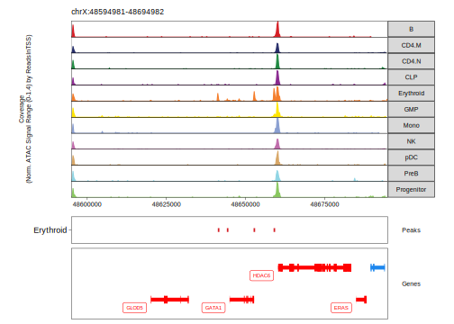

13.2 Plotting Marker Peaks in ArchR
ArchR provides multiple plotting functions to interact with the SummarizedExperiment objects returned by getMarkerFeatures().
13.2.1 Marker Peak Heatmaps
We can visualize these marker peaks (or any features output by getMarkerFeatures()) as a heatmap using the markerHeatmap() function.
heatmapPeaks <- markerHeatmap(
seMarker = markerPeaks,
cutOff = "FDR <= 0.1 & Log2FC >= 0.5",
transpose = TRUE
)
## Warning: 'markerHeatmap' is deprecated.
## Use 'plotMarkerHeatmap' instead.
## See help("Deprecated")
## ArchR logging to : ArchRLogs/ArchR-plotMarkerHeatmap-371b035768790-Date-2022-12-23_Time-07-44-47.log
## If there is an issue, please report to github with logFile!
## Identified 40319 markers!
## [1] "chr1:1071786-1072286" "chr1:4067482-4067982"
## [3] "chr1:4087539-4088039" "chr1:11341008-11341508"
## [5] "chr1:14039984-14040484" "chr1:15208404-15208904"
## [7] "chr1:16023328-16023828" "chr1:20960267-20960767"
## [9] "chr1:24239630-24240130" "chr1:25068767-25069267"
## [11] "chr1:25074842-25075342" "chr1:26615563-26616063"
## [13] "chr1:27854618-27855118" "chr1:31226442-31226942"
## [15] "chr1:31227400-31227900" "chr1:894963-895463"
## [17] "chr1:895698-896198" "chr1:936606-937106"
## [19] "chr1:1004512-1005012" "chr1:1243738-1244238"
## [21] "chr1:1259856-1260356" "chr1:1307362-1307862"
## [23] "chr1:1447203-1447703" "chr1:1590336-1590836"
## [25] "chr1:1624365-1624865" "chr1:1709660-1710160"
## [27] "chr1:2065270-2065770" "chr1:2126025-2126525"
## [29] "chr1:2163264-2163764" "chr1:2187769-2188269"
## [31] "chr1:1034092-1034592" "chr1:1306243-1306743"
## [33] "chr1:1406855-1407355" "chr1:3566410-3566910"
## [35] "chr1:8761187-8761687" "chr1:9776968-9777468"
## [37] "chr1:15905389-15905889" "chr1:19717721-19718221"
## [39] "chr1:23927484-23927984" "chr1:24069639-24070139"
## [41] "chr1:24741916-24742416" "chr1:24862916-24863416"
## [43] "chr1:26147089-26147589" "chr1:26452853-26453353"
## [45] "chr1:26644134-26644634" "chr1:1114597-1115097"
## [47] "chr1:1827293-1827793" "chr1:2232382-2232882"
## [49] "chr1:5777263-5777763" "chr1:6640958-6641458"
## [51] "chr1:9477690-9478190" "chr1:9483076-9483576"
## [53] "chr1:10964800-10965300" "chr1:11412790-11413290"
## [55] "chr1:11435901-11436401" "chr1:11467303-11467803"
## [57] "chr1:13825006-13825506" "chr1:15082323-15082823"
## [59] "chr1:15671250-15671750" "chr1:17336171-17336671"
## [61] "chr1:940301-940801" "chr1:1790044-1790544"
## [63] "chr1:2528847-2529347" "chr1:2995271-2995771"
## [65] "chr1:3036637-3037137" "chr1:3091380-3091880"
## [67] "chr1:3244618-3245118" "chr1:3458561-3459061"
## [69] "chr1:3691306-3691806" "chr1:4388443-4388943"
## [71] "chr1:6489777-6490277" "chr1:6732571-6733071"
## [73] "chr1:7296076-7296576" "chr1:7609289-7609789"
## [75] "chr1:7615806-7616306" "chr1:6230805-6231305"
## [77] "chr1:6651188-6651688" "chr1:22150168-22150668"
## [79] "chr1:22232660-22233160" "chr1:24130826-24131326"
## [81] "chr1:30265820-30266320" "chr1:39269628-39270128"
## [83] "chr1:39299797-39300297" "chr1:54703945-54704445"
## [85] "chr1:55325286-55325786" "chr1:58717043-58717543"
## [87] "chr1:87617206-87617706" "chr1:154724065-154724565"
## [89] "chr1:156083864-156084364" "chr1:161461166-161461666"
## [91] "chr1:1695612-1696112" "chr1:1711625-1712125"
## [93] "chr1:1837584-1838084" "chr1:2080086-2080586"
## [95] "chr1:2082675-2083175" "chr1:2120838-2121338"
## [97] "chr1:2165763-2166263" "chr1:2230467-2230967"
## [99] "chr1:3585359-3585859" "chr1:3817714-3818214"
## [101] "chr1:6116576-6117076" "chr1:6641925-6642425"
## [103] "chr1:7830467-7830967" "chr1:7831033-7831533"
## [105] "chr1:8001634-8002134" "chr1:762696-763196"
## [107] "chr1:936020-936520" "chr1:955448-955948"
## [109] "chr1:976015-976515" "chr1:1051983-1052483"
## [111] "chr1:1092100-1092600" "chr1:1148107-1148607"
## [113] "chr1:1154655-1155155" "chr1:1509522-1510022"
## [115] "chr1:1510041-1510541" "chr1:1564723-1565223"
## [117] "chr1:1565421-1565921" "chr1:1566251-1566751"
## [119] "chr1:1623718-1624218" "chr1:2158373-2158873"
## [121] "chr1:1144252-1144752" "chr1:4856470-4856970"
## [123] "chr1:6420694-6421194" "chr1:8030215-8030715"
## [125] "chr1:13820452-13820952" "chr1:16393580-16394080"
## [127] "chr1:16416444-16416944" "chr1:17349563-17350063"
## [129] "chr1:17467808-17468308" "chr1:17567375-17567875"
## [131] "chr1:19732550-19733050" "chr1:20404699-20405199"
## [133] "chr1:20427393-20427893" "chr1:22198382-22198882"
## [135] "chr1:24515973-24516473" "chr1:1774220-1774720"
## [137] "chr1:3688925-3689425" "chr1:6647396-6647896"
## [139] "chr1:9473097-9473597" "chr1:9686219-9686719"
## [141] "chr1:20669571-20670071" "chr1:26869783-26870283"
## [143] "chr1:27928767-27929267" "chr1:31228520-31229020"
## [145] "chr1:31949766-31950266" "chr1:33523674-33524174"
## [147] "chr1:35384646-35385146" "chr1:41480609-41481109"
## [149] "chr1:41984090-41984590" "chr1:54941604-54942104"
## [151] "chr1:845326-845826" "chr1:856376-856876"
## [153] "chr1:859015-859515" "chr1:931439-931939"
## [155] "chr1:999440-999940" "chr1:1079383-1079883"
## [157] "chr1:1240604-1241104" "chr1:1293750-1294250"
## [159] "chr1:1935041-1935541" "chr1:2058367-2058867"
## [161] "chr1:2210524-2211024" "chr1:2221930-2222430"
## [163] "chr1:2225956-2226456" "chr1:2487416-2487916"
## [165] "chr1:2705411-2705911"
## Adding Annotations..
## Preparing Main Heatmap..
## 'magick' package is suggested to install to give better rasterization.
##
## Set `ht_opt$message = FALSE` to turn off this message.
## ArchR logging successful to : ArchRLogs/ArchR-plotMarkerHeatmap-371b035768790-Date-2022-12-23_Time-07-44-47.logWe can plot this heatmap using draw().
draw(heatmapPeaks, heatmap_legend_side = "bot", annotation_legend_side = "bot")
To save an editable vectorized version of this plot, we use the plotPDF() function.
plotPDF(heatmapPeaks, name = "Peak-Marker-Heatmap", width = 8, height = 6, ArchRProj = projHeme5, addDOC = FALSE)
## Plotting ComplexHeatmap!13.2.2 Marker Peak MA and Volcano Plots
Instead of plotting a heatmap, we can also plot an MA or Volcano plot for any individual cell group. To do this, we use the plotMarkers() function. For an MA plot we specify plotAs = "MA". Here we specify the “Erythroid” cell group via the name parameter.
pma <- plotMarkers(seMarker = markerPeaks, name = "Erythroid", cutOff = "FDR <= 0.1 & Log2FC >= 1", plotAs = "MA")
pma
## Warning: Removed 46 rows containing missing values (geom_point_rast).
Similarly, for a Volcano plot, we specify plotAs = "Volcano".
pv <- plotMarkers(seMarker = markerPeaks, name = "Erythroid", cutOff = "FDR <= 0.1 & Log2FC >= 1", plotAs = "Volcano")
pv
## Warning: Removed 46 rows containing missing values (geom_point_rast).
To save an editable vectorized version of these plots, we use the plotPDF() function.
plotPDF(pma, pv, name = "Erythroid-Markers-MA-Volcano", width = 5, height = 5, ArchRProj = projHeme5, addDOC = FALSE)
## Plotting Ggplot!
## Plotting Ggplot!13.2.3 Marker Peaks in Browser Tracks
Additionally we can see these peak regions overlayed on our browser tracks by passing the relevant peak regions to the features parameterin the plotBrowserTrack() function. This will add an additional BED-style track of marker peak regions to the bottom of our ArchR track plot. Here we specify plotting the GATA1 gene via the geneSymbol parameter.
p <- plotBrowserTrack(
ArchRProj = projHeme5,
groupBy = "Clusters2",
geneSymbol = c("GATA1"),
features = getMarkers(markerPeaks, cutOff = "FDR <= 0.1 & Log2FC >= 1", returnGR = TRUE)["Erythroid"],
upstream = 50000,
downstream = 50000
)
## ArchR logging to : ArchRLogs/ArchR-plotBrowserTrack-371b0224bbbb5-Date-2022-12-23_Time-07-45-48.log
## If there is an issue, please report to github with logFile!
## 2022-12-23 07:45:49 : Validating Region, 0.015 mins elapsed.
## GRanges object with 1 range and 2 metadata columns:
## seqnames ranges strand | gene_id symbol
## <Rle> <IRanges> <Rle> | <character> <character>
## [1] chrX 48644982-48652717 + | 2623 GATA1
## -------
## seqinfo: 24 sequences from hg19 genome
## 2022-12-23 07:45:49 : Adding Bulk Tracks (1 of 1), 0.017 mins elapsed.
## 2022-12-23 07:45:50 : Adding Feature Tracks (1 of 1), 0.043 mins elapsed.
## 2022-12-23 07:45:50 : Adding Gene Tracks (1 of 1), 0.044 mins elapsed.
## 2022-12-23 07:45:50 : Plotting, 0.048 mins elapsed.
## ArchR logging successful to : ArchRLogs/ArchR-plotBrowserTrack-371b0224bbbb5-Date-2022-12-23_Time-07-45-48.logWe can plot this using grid::grid.draw().
grid::grid.newpage()
grid::grid.draw(p$GATA1)
To save an editable vectorized version of this plot, we use the plotPDF() function.
plotPDF(p, name = "Plot-Tracks-With-Features", width = 5, height = 5, ArchRProj = projHeme5, addDOC = FALSE)
## Plotting Gtable!
## NULL